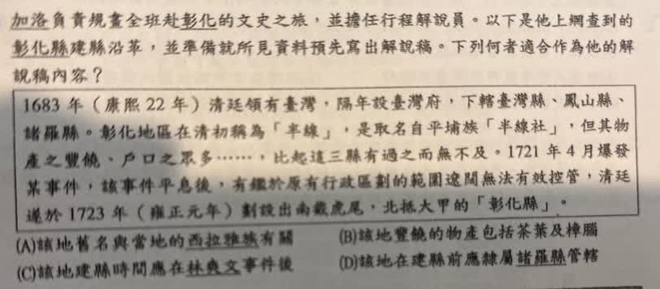

分享原卷｜第7題
完整原題
作答所需文章／材料
1683年（康熙22年）清廷領有臺灣，隔年設臺灣府，下轄臺灣縣、鳳山縣、諸羅縣。彰化地區在清初稱為「半線」，是取名自平埔族「半線社」，但其物產之豐饒、戶口之眾多……，比起這三縣有過之而無不及。1721年4月爆發某事件，該事件平息後，有鑑於原有行政區劃的範圍遼闊無法有效控管，清廷遂於1723年（雍正元年）劃設出南抵虎尾、北抵大甲的「彰化縣」。加洛負責規畫全班到彰化的文史之旅，並擔任行程解說員。以下是他上網查到的彰化縣建縣沿革，並準備就所見資料預先寫出解說稿。下列何者適合作為他的解說稿內容？
(A) 該地舊名與當地的西拉雅族有關
(B) 該地豐饒的物產包括茶葉及樟腦
(C) 該地建縣時間應在林爽文事件後
(D) 該地在建縣前應隸屬諸羅縣管轄
先想一想，再查看答案、解說與原圖
原卷作答：A（原卷紅筆訂正D）
正確答案：D，該地在建縣前應隸屬諸羅縣管轄。
逐項解析
| 選項與原句 | 判讀 | 句意與判斷理由 |
|---|---|---|
| (A) 該地舊名與當地的西拉雅族有關 | 不選 | 半線社屬巴布薩族背景，不能換成西拉雅族。 |
| (B) 該地豐饒的物產包括茶葉及樟腦 | 不選 | 不符合本段清初設縣背景；不能把清末茶葉樟腦貿易直接套入。 |
| (C) 該地建縣時間應在林爽文事件後 | 不選 | 1723設縣早於1786開始的林爽文事件，文中1721另指朱一貴事件。 |
| (D) 該地在建縣前應隸屬諸羅縣管轄 | 應選 | 清初彰化地區屬諸羅縣，1723年才分設彰化縣。 |
詳細說明與解題步驟
【先看清代行政區劃的先後】
1683年鄭氏政權降清，隔年1684年清廷在臺灣設一府三縣，三縣為臺灣、鳳山、諸羅。當時彰化地區尚未另設彰化縣，屬諸羅縣管轄。1723年再從諸羅縣劃出彰化縣，所以D正確。
【逐項核對】
A：半線來自平埔族半線社，相關族群是巴布薩族，不是選項所寫西拉雅族。不能只因都屬平埔族群就混用族名。
B：材料說物產豐饒，不能因此任意加入任何著名物產。清代前中期彰化的稻米、蔗糖，與清末開港後中北部以茶葉、樟腦著稱的背景要區分，B不適合作為這段設縣沿革的解說。
C：文中1721年事件是朱一貴事件，1723年彰化建縣在其後；林爽文事件始於1786年，遠晚於設縣。不能把兩場事件混為一談。
D：彰化設縣前屬諸羅縣，正好可銜接原本轄域過大、需要重新劃設的背景。
【閱讀方法】
1721→1723的先後是材料直接線索；比較選項時同時檢查族名、產業所屬時期及行政區劃，不能只記住某事件也發生在彰化就選它。
核對註記：已依原卷或完整文字核對並獨立解題；對應教材課次未確認，歸綜合。
原圖（僅本題）
